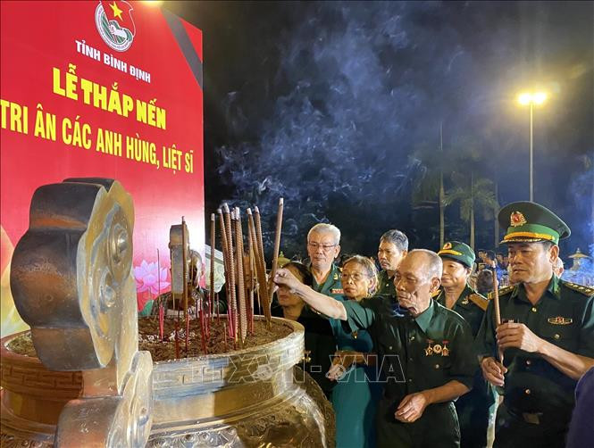

Lời Tri Ân
- Ngày 27/7 hàng năm là ngày Thương binh Liệt sĩ. Đây chính ngày ngày mà người Việt Nam ta sẽ lắng đọng lại, nhớ đến những công lao mà những người chiến sĩ đã bỏ ra, mồ hôi, nước mắt và cả máu để mang đến một đất nước Việt Nam độc lập và tự do. Nhân ngày này, con/ cháu xin gửi những lời chúc, những lời tri ân tốt đẹp nhất dành cho những vị anh hùng đã quên mình vì đất nước, vì nhân dân.
- Chiến tranh qua đi nhưng thương tổn vẫn còn đọng lại. Đọng lại trên những vết thương của thương binh, đọng lại trong trái tim của những gia đình của liệt sĩ đã hi sinh, đọng lại trong chính trái tim con người Việt Nam. Ngày 27/7 là ngày để chúng ta, những người đã được sống ở một đất nước hoà bình nhờ vào sự hi sinh quên mình của bậc cha ông, tưởng nhớ và biết ơn những công lao to lớn của họ. Nhân ngày Thương binh Liệt sĩ, chúng con xin bày tỏ sự biết ơn chân thành nhất đối với những anh hùng đã xả thân vì một đất nước độc lập tự do.
- Xin gửi đến những anh hùng đã gửi lại thanh xuân mình trong khói lửa. Vì một đất nước độc lập tự do, vì đồng bào mình được ấm no hạnh phúc. Họ gửi lại tuổi 20 nơi chiến trường khốc liệt mà chẳng hề sợ hãi. Họ gửi lại những hoài bão tuổi trẻ vì nhân dân đất Việt, họ trở về với thân đầy mảnh đạn hay mãi nằm lại nơi đất mẹ cũng chẳng màng. Gửi ngàn lời tri ân, biết ơn đầy chân thành đến với thương binh, gửi tấm lòng luôn khắc ghi những gì liệt sĩ đã làm cho đất nước. Nhân ngày 27/7 - ngày Thương binh Liệt sĩ - chúc những vị anh hùng luôn tràn đầy sức khoẻ, không bệnh tật, luôn may mắn và hạnh phúc.

Thơ Tri Ân
-
Thắp nến tri ân nghĩa trang liệt sĩ
- Ngày lễ tri ân đã đến rồi
- Đền ơn đáp nghĩa dậy muôn nơi
- Nghĩa trang liệt sĩ trong toàn quốc
- Lấp lánh nến sao rực sáng ngời
- Hỡi những người con yêu quý ơi
- Vì dân vì nước máu xương rơi
- Bác Hồ đã đặt ngày 27
- Tháng 7 hàng năm thật tuyệt vời.
-
Dâng hương tượng đài liệt sĩ quê nhà
- Trăm họ muôn nhà đến thắp hương
- Anh hùng liệt sĩ của quê hương
- Hy sinh anh dũng vì dân nước
- Gửi lại thịt xương các chiến trường
- Cán bộ nhân dân các xóm thôn
- Tối nay đông đủ trước Đài hương
- Tri ân tưởng nhớ người vì nước
- Thắp nến lòng đau nước mắt vương.